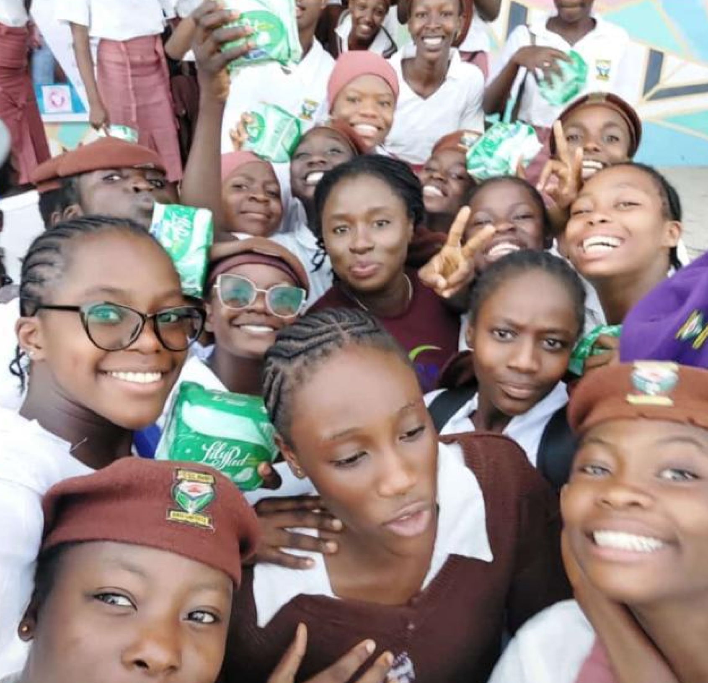
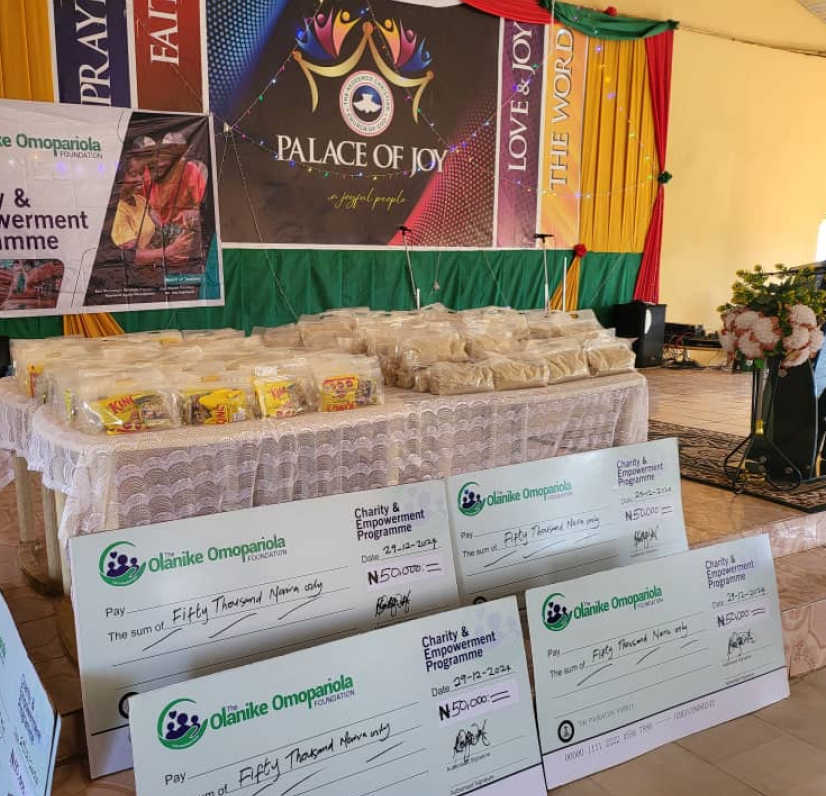
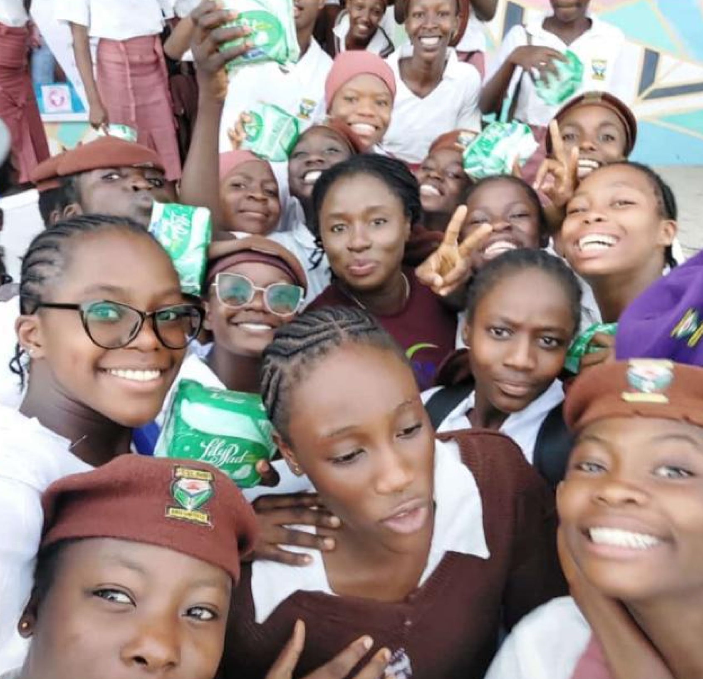
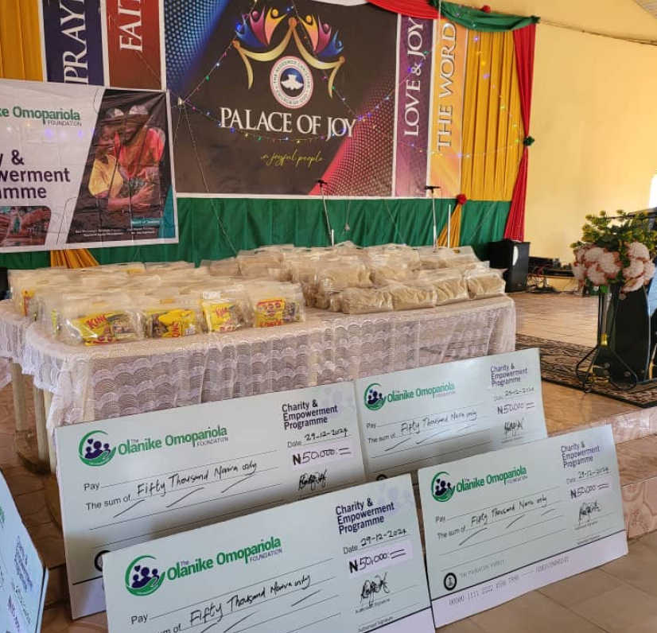

Hope in Her Hands
Fatima’s world was limited to the four walls of her home.She had never held a textbook—until the Foundation’s outreach program introduced her to literacy at age 13. Now, she reads bedtime stories to her siblings and dreams of becoming a teacher. “They didn’t just show up. They stayed. They taught me hope.”
Read Story →
 


